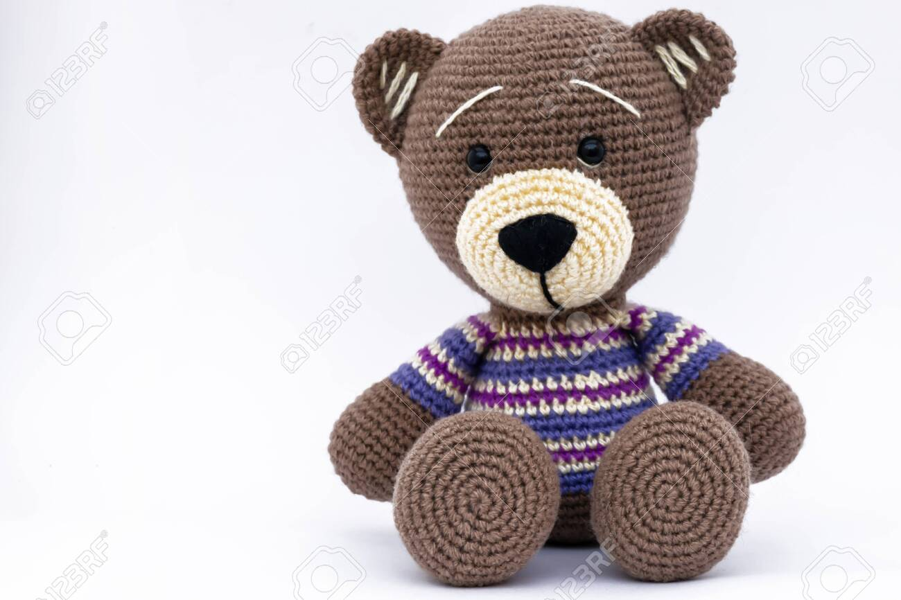
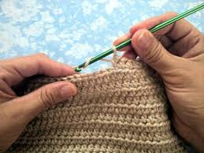
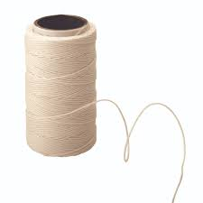

La fotografía es parte de la identidad visual de la marca. No se trata solo de tomar fotos bonitas, sino de que cada imagen represente los valores de Sueños Tejidos. Una foto coherente refuerza la identidad; una foto que no lo es, la debilita.
Las fotos deben sentirse cálidas, cercanas y artesanales. Siempre con luz natural y fondos neutros o tonos crema. Una buena foto de la marca no necesita producción elaborada, necesita honestidad y calidez.

Piezas terminadas, el proceso de tejido, manos trabajando, materiales sobre una superficie limpia y la pieza junto a su dueño. Cada momento cuenta una parte de la historia de la marca.

Fotos de materiales deben mostrar el hilo, la aguja y los accesorios de forma ordenada y con buena luz. Se transmite que detrás de cada pieza hay un proceso cuidadoso.

El plano desde arriba es ideal para mostrar piezas terminadas, materiales o procesos. Permite ver todos los elementos de forma clara y estética.
Fondos llamativos o de colores fuera de la paleta de la marca, filtros agresivos, fotos oscuras o con luz artificial dura, y encuadres que industrialicen la pieza. La identidad de Sueños Tejidos es artesanal y cercana.